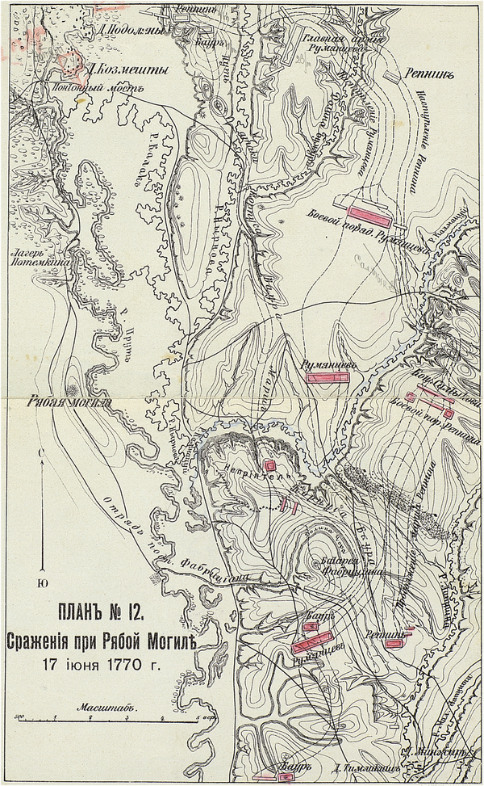
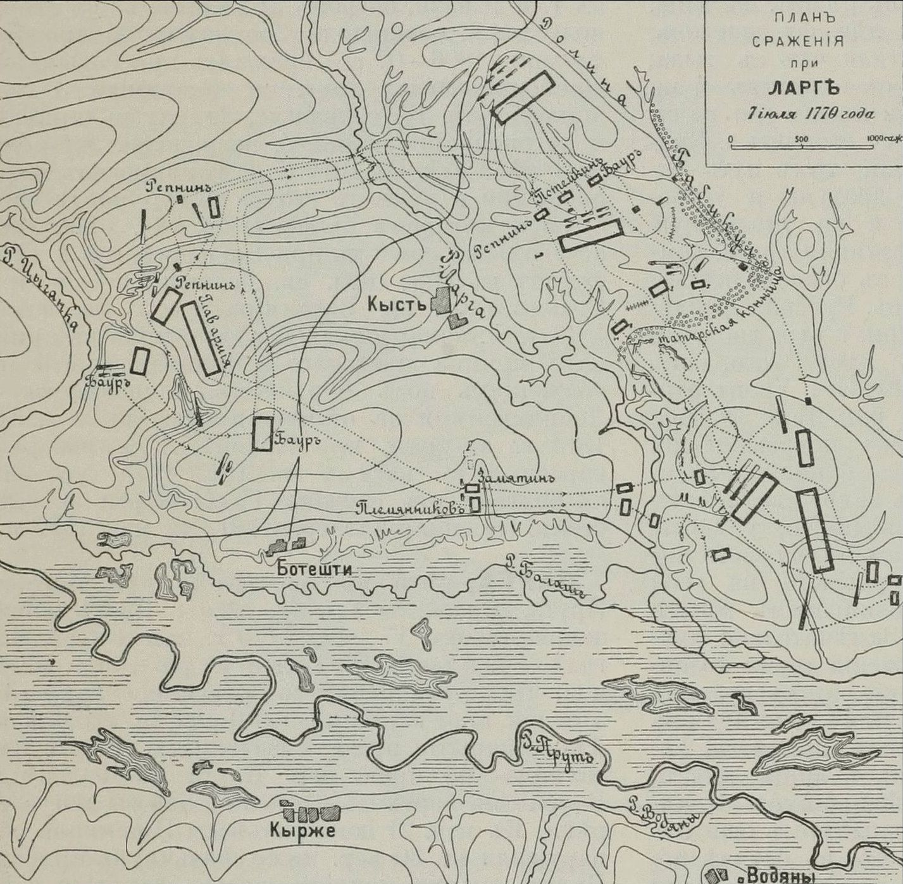
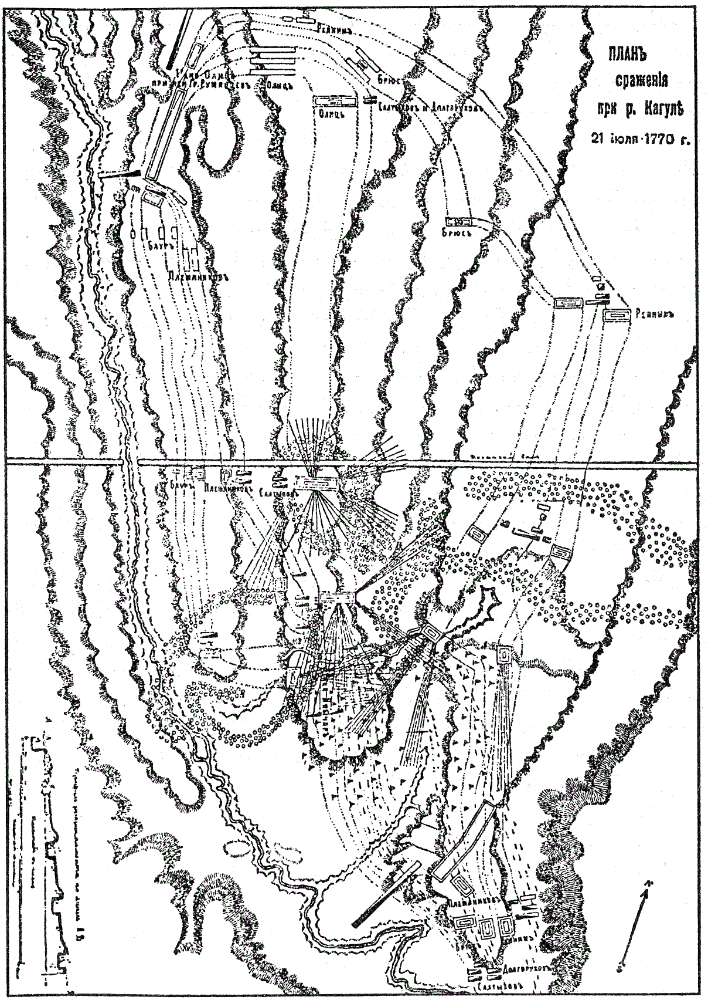
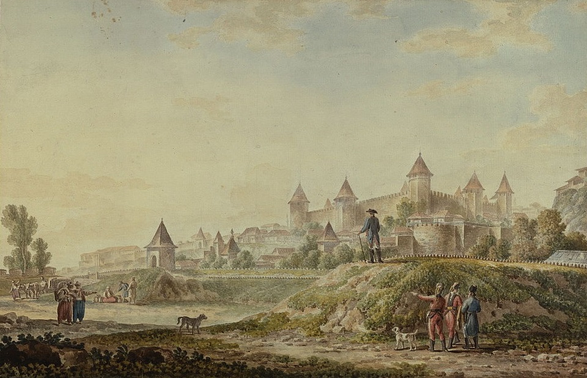
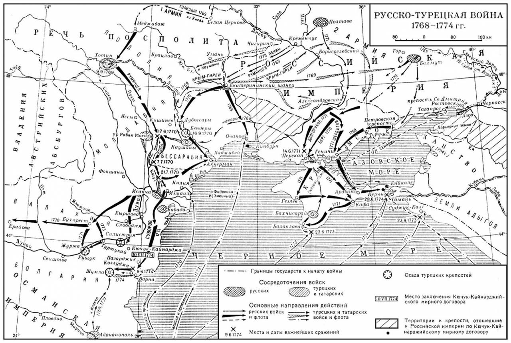
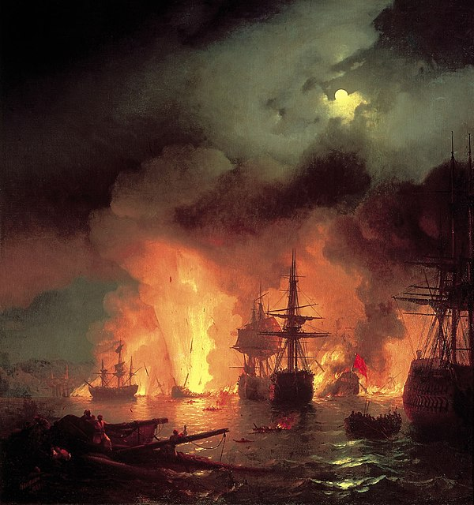
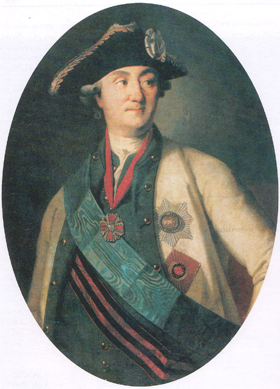
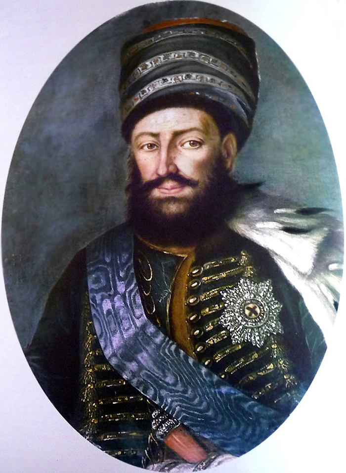
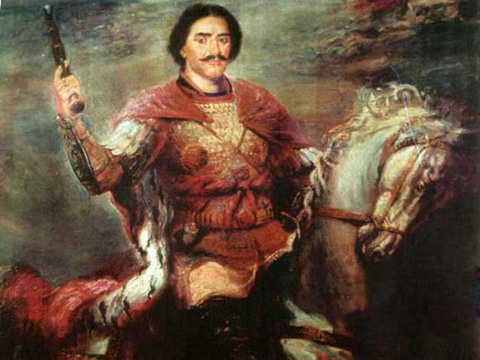

В 1770 году 1-я армия, под командованием Румянцева, продолжала действия в Валахии и Молдавии. Корпус Х. Ф. Штофельна вел тяжёлые бои, а турки пытались выбить фокшанский отряд. В январе 1770 года произошло сражение при Фокшанах, а 18 января — сражение при Браилове. Несмотря на победу, русские не решились взять крепость и отошли. Румянцев разработал план действий, целью которого было окончательно очистить Валахию и Молдавию от турок. Турки, готовясь к нападению, числили армию в 150 тыс. человек, а 1-я армия насчитывала около 38 тыс., что включало 17 полков пехоты, 9 полков кавалерии и другие части.


Действия главной армии в эту кампанию были блистательны и ознаменовались победами 17 (28) июня 1770 при Рябой могиле, 7 (18) июля 1770 при Ларге и наконец 21 июля (1 августа) 1770 при Кагуле, где турки потерпели страшный разгром несмотря на то, что Румянцев смог выставить против них лишь 17 тыс. человек. Только на поле боя турки оставили 3 тыс. убитых, и ещё больше потеряли при бегстве и панической обратной переправе за Дунай 22-23 июля. 26 июля на волне успеха Репнин при слабом сопротивлении деморализованных турок взял Измаил. Всего 21-26 июля турки потеряли по показаниям пленных до 20 тыс. человек. Русская армия захватила 4 тыс. пленных, 205 пушек и важную крепость Измаил, сама потеряв 375 убитых и пропавших и 560 раненых[42]. Наградой для Румянцева за Кагул стал чин генерал-фельдмаршала.
Следствием победы при Кагуле стали новые успехи русской армии. Корпус Репнина 10 августа осадил важнейшую для турок крепость Килию, которая прикрывала устье Дуная и позволяла им морем перебрасывать резервы из Константинополя. 13 августа турецкий гарнизон Килии совершил сильную вылазку, отбитую отрядами подполковников Ф. И. Фабрициана и Ф. Н. Кличка. 21 августа Килия капитулировала, Репнин взял 68 пушек, потеряв за время осады 42 убитых и 158 раненых. 13 сентября бригадир Игельстром осадил Аккерман, который сдался 28 сентября (трофеи русских — 60 пушек). 21 сентября началась осада отрядом генерал-майора Ф. И. Глебова крепости Браилов, которую турки после упорной обороны оставили только 10 ноября. В боях за Браилов Глебов потерял около 700 убитых и 2100 раненых, взяв 66 пушек. 14 ноября И. В. Гудович вновь вошёл в Бухарест, 28 декабря М. Н. Кречетников занял Крайову. На зимние квартиры главная армия расположилась в Молдавии и Валахии.


2-я армия, под командованием графа Панина, в 1770 году была разделена на несколько корпусов. Основной корпус был нацелен на Бендеры, а другие части действовали против Крыма и Очакова. 15 сентября Панин начал штурм Бендер, который, несмотря на упорное сопротивление, был взят 16 сентября. Потери русских составили 6 тыс., а турок — 7 тыс. убитых и более 5 тыс. пленных.
В ходе осады Бендер Панин вел переговоры с ногайскими татарами, и те решили отложиться от Турции, заключив союз с Россией. После взятия Бендер 2-я армия продолжила действия на Днепр, но не смогла организовать осаду Очакова в этом году.


Средиземное море
В феврале 1770 года началась Первая Архипелагская экспедиция, организованная для поддержки антиосманских восстаний в Греции и ослабления турецкого присутствия в этом регионе. 17 (28) февраля 1770 года русская 1-я эскадра Средиземного флота под командованием адмирала Эссена высадила десант на полуострове Морее, который был частью Османской империи и являлся важным стратегическим регионом.
Однако действия на суше не оправдали ожиданий. Русские командующие недооценили силы турок, находившихся в Греции, и переоценили возможности греческих повстанцев. Несмотря на поддержку местного населения, восстание не получило широкого распространения, а русская армия на суше столкнулась с ожесточённым сопротивлением, что помешало русским добиться устойчивых успехов.


первый командующий экспедицией
Тем не менее, в это же время на море события развивались более удачно для России. 26 июня (7 июля) 1770 года произошёл решающий морской бой у Чесменской бухты. В этом сражении турецкий флот был разгромлен русскими силами. Русский флот под командованием адмирала Грейга, действовавший в составе 1-й эскадры, сжёг турецкие корабли и нанес туркам тяжёлые потери. Этот разгром стал одним из величайших успехов русского флота в XVIII веке и значительно ослабил турецкое морское господство в Средиземном море.
Сражение в Чесменской бухте привело к тому, что турки не могли эффективно поддерживать свои силы на суше в Греции, а русские усилили свою стратегическую позицию в этом регионе. Победа на море также помогла укрепить русские позиции в Черноморском и Средиземном морях, а также продемонстрировала эффективность русского флота.
Кавказ
Закавказский отряд Тотлебена состоял из 1 пехотного полка, 4 эскадронов, 12 орудий и 5 казачьих сотен (около 3 тыс. человек). Союзниками России были Картли-Кахетинский царь Ираклий II и Имеретинский царь Соломон I. Однако отношения между союзниками не заладились. Русский офицер-волонтер подполковник Чоглоков решил сместить Тотлебена и воспользоваться русскими войсками для захвата власти. Тотлебен приказал арестовать Чоглокова, но тому помогли бежать в Тифлис. Чоглоков сделал из Тифлиса донос в Петербург, что Тотлебен или сошёл с ума, или замышляет измену. Взволнованный этим, Тотлебен обвинил в интригах Ираклия. При таких условиях военные действия не могли идти успешно. Весной 1770 года, когда Ираклий и Тотлебен двинулись вместе на турецкую крепость Ахалцихе, между ними опять возникли пререкания. Тотлебен отделился и ушёл в Имеретию, а Ираклий, оставшись один, вынужден был отступить.
Турки пытались окружить его, однако 20 апреля Ираклий одержал победу в битве у Д'Аспиндза. В Имеретии Тотлебен 6 августа взял Кутаиси, затем двинулся на Поти, разбив по дороге 12-тысячный отряд турок. Осада Поти началась 3 октября, но шла неудачно. Тотлебен и Соломон действовали разрозненно, совершенно не считаясь друг с другом. Осенью Екатерина II, посчитав, что Тотлебен приносит больше вреда, чем пользы, заменила его генерал-майором Сухотиным. Сухотин не верил в возможность взятия Поти и зимой 1771 года снял осаду. Из-за этого над Сухотиным было даже начато следствие, но между тем Екатерина признала бесполезным более держать войска за Кавказом, и весной 1772 года закавказский отряд возвратился в Россию, оставив в Грузии множество русских дезертиров.

Картлийско-Кахетинского царства
